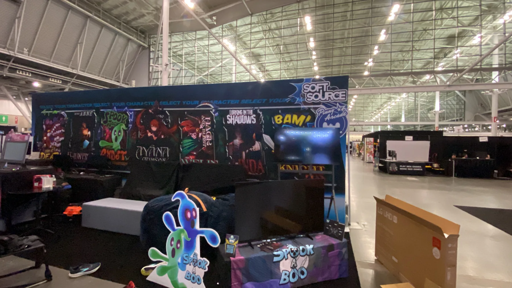
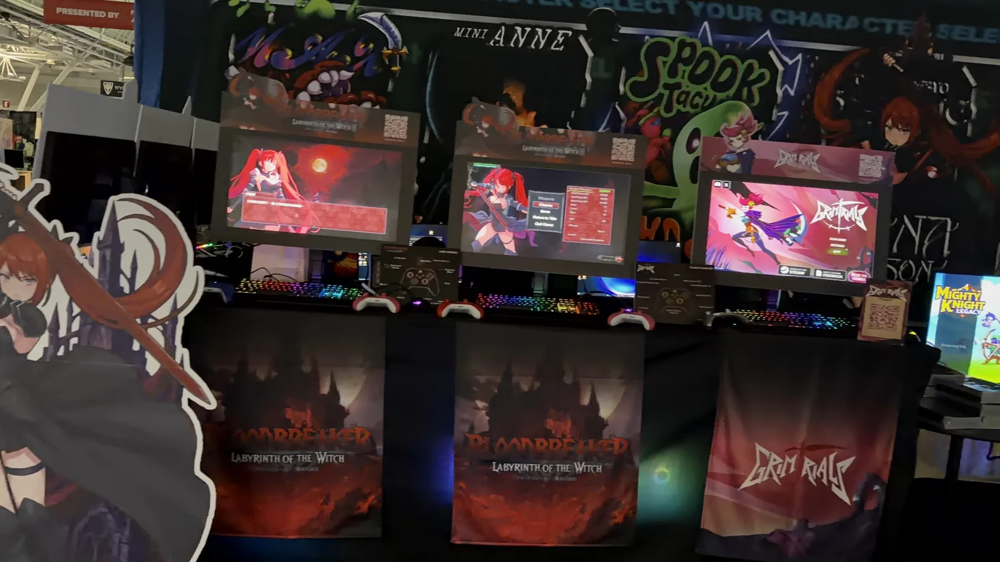
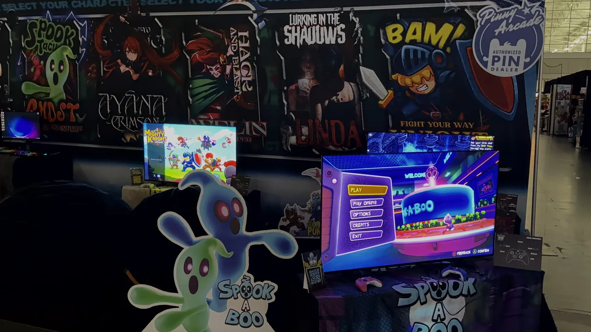

Booth Operations
Full booth operation across an 11-station playable setup.
How AniMéi Gamer Zone supported Soft Source at PAX East 2026 with full booth operations, player engagement, onboarding, data collection and actionable player insights.

Soft Source needed more than people standing at a booth. AGZ operated the activation, helped players get into the games, maintained player flow and turned show-floor interaction into structured feedback.
Full booth operation across an 11-station playable setup.
Live demos, free play, onboarding and hands-on guidance.
268 survey responses plus live behavioral observations from the show floor.
Photos from Soft Source’s PAX East 2026 activation in Boston. AGZ supported booth operations, player onboarding, engagement and feedback collection across the playable setup.


The player feedback identified strong overall engagement while surfacing onboarding as the primary improvement opportunity.
Players showed strong willingness to re-engage.
The demos generated meaningful advocacy intent.
Live observation showed players often needed early assistance with controls and objectives.
Improve early onboarding, UI clarity and guidance for short convention play sessions.
If your team is traveling to the U.S., AGZ can become the local execution layer between your build and the American show floor.
Staffing plan, equipment sourcing, print/signage coordination and activation planning.
Booth operations, player onboarding, demo support, engagement and issue escalation.
Player feedback, observations and insights your team can use after the convention ends.
Send us your event, booth size, demo stations and support needs. We'll use it to scope the right U.S. support plan.